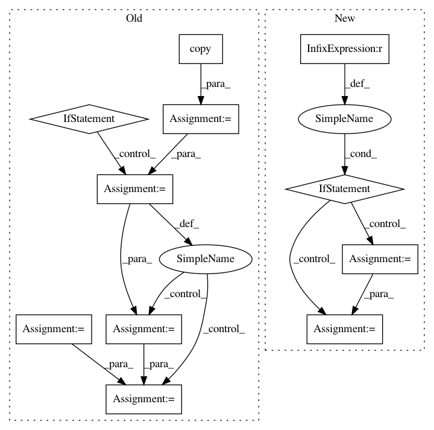

0ac7cecce4f147011037fcb79dfd57867b8329a8,nilmtk/metergroup.py,MeterGroup,plot_good_sections,#MeterGroup#Any#Any#Any#,1393
Before Change
include_disabled_meters : bool
if ax is None:
ax = plt.gca()
// Prepare list of meters
meters = copy(self.meters)
if include_disabled_meters:
meters += self.disabled_meters
meters.sort(key=meter_sorting_key, reverse=True)
labels = []
for i, meter in enumerate(meters):
good_sections = meter.good_sections(**kwargs)
ax = good_sections.plot(ax=ax, y=i)
labels.append(getattr(meter, label_func)())
// Y tick formatting
n = len(meters)
After Change
// Load each appliance
for appliance_md in appliances:
appliance_md["dataset"] = building_id.dataset
appliance_md["building"] = building_id.instance
appliance = Appliance(appliance_md)
meter_ids = [ElecMeterID(instance=meter_instance,
building=building_id.instance,
dataset=building_id.dataset)
for meter_instance in appliance.metadata["meters"]]
if appliance.n_meters == 1:
In pattern: SUPERPATTERN
Frequency: 3
Non-data size: 11
Instances
Project Name: nilmtk/nilmtk
Commit Name: 0ac7cecce4f147011037fcb79dfd57867b8329a8
Time: 2014-12-19
Author: jack-list@xlk.org.uk
File Name: nilmtk/metergroup.py
Class Name: MeterGroup
Method Name: plot_good_sections
Project Name: shaypal5/pdpipe
Commit Name: da3630c4eccc04079e465256786f65d6d87e7b1f
Time: 2020-02-16
Author: shaypal5@gmail.com
File Name: pdpipe/sklearn_stages.py
Class Name: Scale
Method Name: _fit_transform
Project Name: shaypal5/pdpipe
Commit Name: da3630c4eccc04079e465256786f65d6d87e7b1f
Time: 2020-02-16
Author: shaypal5@gmail.com
File Name: pdpipe/sklearn_stages.py
Class Name: Scale
Method Name: _transform